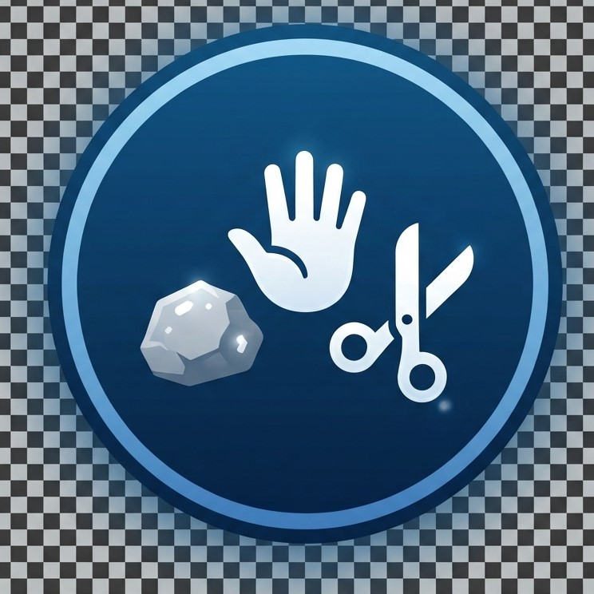

Hi, I'm Ibrahim. I build clean, efficient web experiences.
A software developer specializing in bridging the gap between elegant design and robust engineering. Focused on creating intuitive digital products that solve real-world problems.
.png)
About
I'm a software developer specializing in bridging the gap between elegant design and robust engineering to build tools that empower people.
My journey in software development is rooted in a deep curiosity for how things work, and a desire to build tools that empower people. I transition from a background in industrial design, bringing a structural and user-centric approach to writing code.
I believe that great software is like good architecture, it should be functionally sound, aesthetically pleasing, and built to last. When I'm not writing code, you can find me exploring typography, dissecting design systems, or contributing to open-source projects.
Skills & Expertise
Frontend
Backend
Design & Tools
Services
Web Development
Building scalable, high-performance web applications using modern frameworks and best practices.
UI/UX Design
Creating intuitive, user-centric interfaces that provide seamless digital experiences across all devices.
Technical Consulting
Strategic advice on technology stacks, architecture, and digital transformation for growing businesses.
Selected Projects

GuessMaster Game
A retro-arcade styled interactive number guessing game. Features dynamic proximity hints, finite health/lives system, full keyboard accessibility, and state persistence.

The Arena — Rock Paper Scissors
A tactile, retro-styled rock-paper-scissors game built with a custom kinetic earth-tone palette. Features instant CPU randomized duels, dynamic round feedback, and real-time score tracking.

City Weather App
A real-time meteorological web app consuming OpenWeatherMap REST API. Features asynchronous location-based querying, dynamic weather metric visualizations, responsive glassmorphism UI, and graceful network error handling.

Marginalia Booksellers
A bespoke, typography-driven e-commerce landing page for an antiquarian bookshop. Designed with a warm parchment aesthetic, curated typography pairing (EB Garamond & Courier Prime), and custom editorial grid layouts.
Get in Touch
I'm currently open for new opportunities. Whether you have a question or just want to say hi, I'll try my best to get back to you!
✉️ imzubairu00@gmail.com